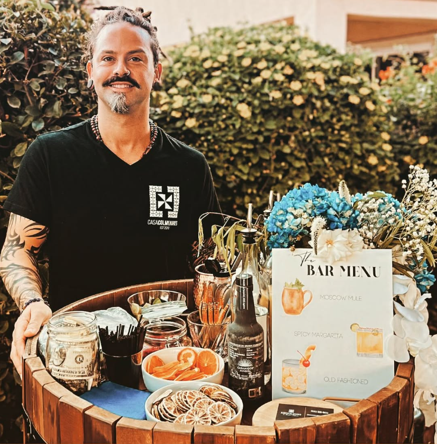

Our Story
Alberto Colmenares, a passionate mixologist, began crafting artisanal infusions to reinvent the way we experience spirits. With a deep respect for tradition and a bold creative vision, he started blending high-quality vodka, whisky, and other spirits with fresh fruits, spices, and botanicals. His unique infusions soon became known for their bold flavor profiles and aesthetic presentation. Today, Casa Colmenares Infusions (@casacolmenaresinfusions) represents a commitment to craftsmanship, innovation, and sensory delight.